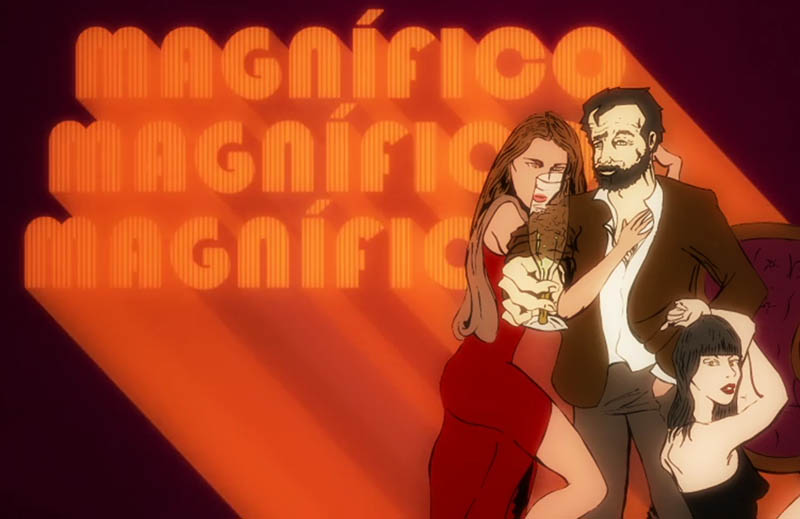
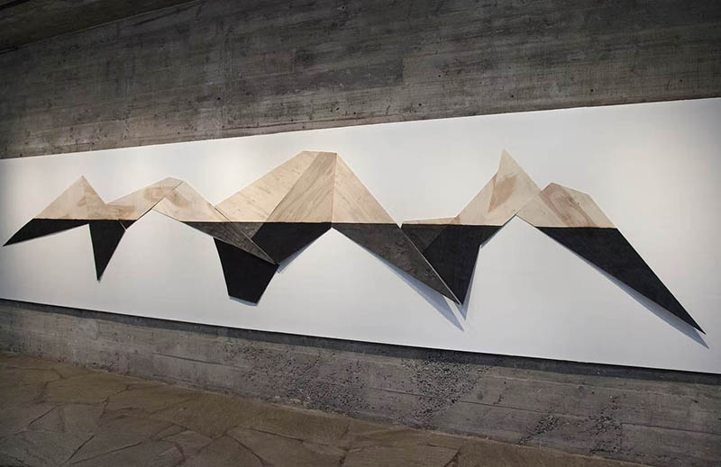
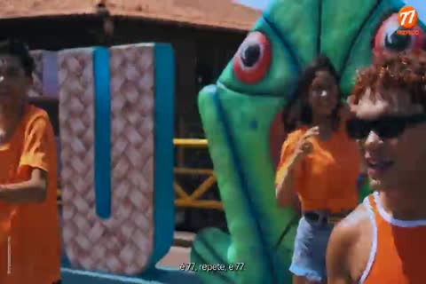

TCHELO NOGUEIRA
|
CREATIVE DIRECTION AND CONCEPT DEVELOPMENT
|
COPYWRITER AND ART DIRECTOR
About
|
LinkedIn
|
Contact
|
PT
/
EN
Portfolio
Resume
Creativity beyond advertising
Political propaganda
CREATIVITY BEYOND ADVERTISING
SHORT FILM
Um Prato que se Come
directing | screenwriting | editing | music | motion graphics

ANIMATION
magnífico + bad trip
directing | screenwriting | editing | music | motion graphics
TAILOR-MADE ART EXPERIENCES
roche + itaú + porto seguro
concept | culture | people development

TCHELO, VISUAL ARTIST
objects, installations
contemporary art | conceptual art | exhibitions
POLITICAL PROPAGANDA
HADDAD FOR MAYOR
2012
ZÉ REINALDO FOR SENATE
2018
CLÉCIO FOR GOVERNOR
2022

JARDEL FOR MAYOR
2024